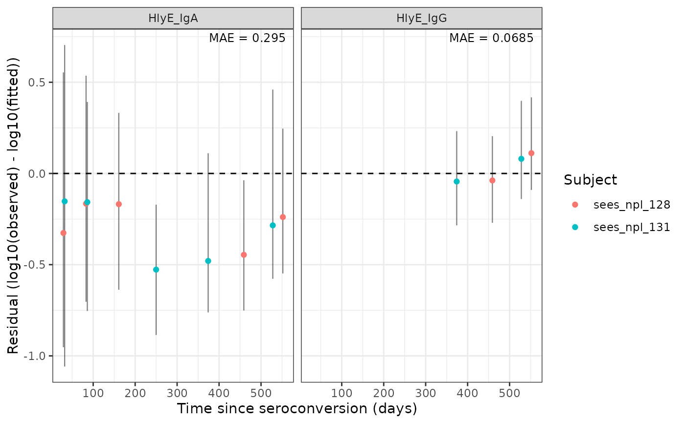

Plots residuals over time and facets by antigen-isotype (Iso_type). The
mean absolute residual for each facet is annotated in the upper-right
corner.
Fitted and residual values are calculated on demand via calc_fit_mod(),
using the original_data, strat, and decay_type attributes stored on
model by run_serodynamics(), and include both natural-scale and
log10-scale medians and 2.5%/97.5% posterior quantiles.
Usage
plot_residuals(
model,
ids = NULL,
antigen_isos = NULL,
log_y = TRUE,
show_interval = TRUE,
connect_lines = FALSE,
facet_by_strat = NULL,
color_by_strat = NULL
)Arguments
- model
An
sr_modelobject (returned byrun_serodynamics()), withoriginal_data,strat, anddecay_typeattributes (seecalc_fit_mod()).- ids
(Optional) Participant IDs to include. When supplied, points (and, if
connect_lines = TRUE, lines) are colored by subject; otherwise no color is used.- antigen_isos
(Optional) Antigen-isotypes (
antigen_iso) to include.- log_y
logical; if
TRUE(default), plots the residual computed on the log10 scale (log10(observed) - log10(fitted)); ifFALSE, plots the natural-scale residual.- show_interval
logical; if
TRUE(default), draws an error bar around each residual spanning its 2.5%/97.5% posterior interval, to visualize the precision of the posterior.- connect_lines
logical; if
TRUE, connects each subject's residuals over time with a line. DefaultFALSE.- facet_by_strat
character; facets residual plot and calculates MAE by specified stratification variable. Default
NULL.- color_by_strat
character; colors residual plot and calculates MAE by specified stratification variable. Default
NULL.
Value
A ggplot2::ggplot object.
Examples
plot_residuals(
model = serodynamics::nepal_sees_jags_output,
ids = c("sees_npl_128", "sees_npl_131"),
antigen_isos = c("HlyE_IgA", "HlyE_IgG")
)
